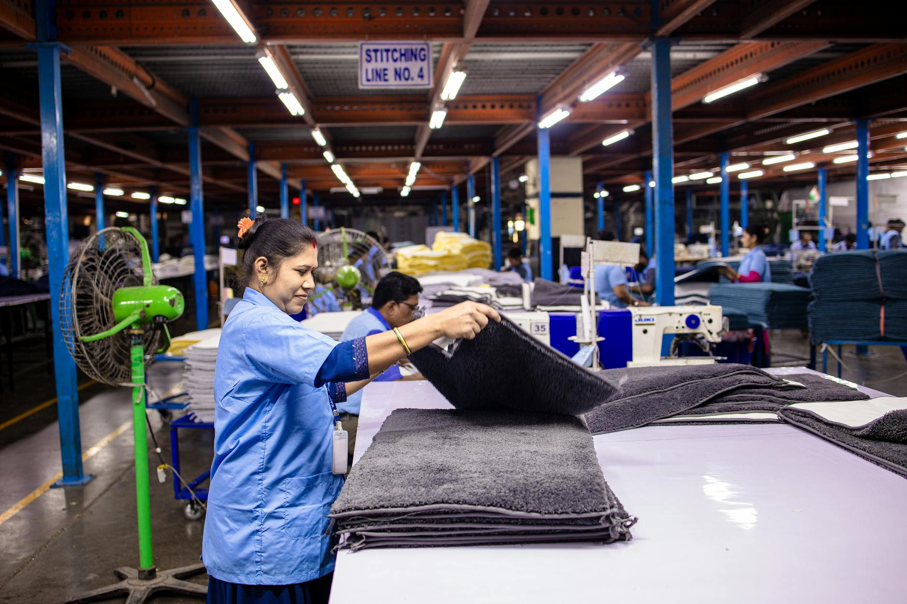
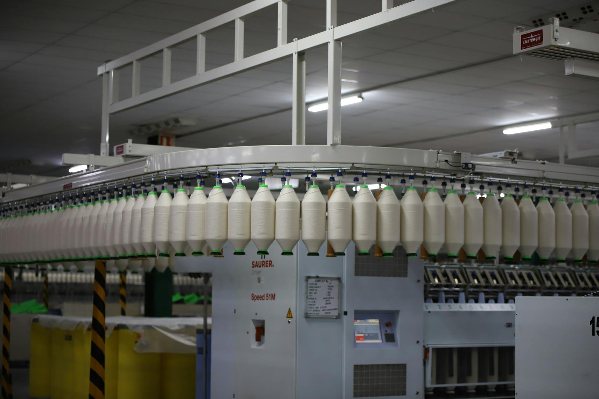

Latest Guides
In-depth articles written for foreigners working in Japan

How to Balance Speed and Accuracy in a Japanese Factory
In a Japanese factory, working fast is important, but careless mistakes can create rework, delay the line, and cause safety problems. The real goal is to keep a steady pace while protecting quality.
Read Article →Pension Deductions on Your Japanese Factory Payslip: What They Mean
Every month, a chunk of your salary disappears as a pension deduction — and many factory workers have no idea what it is or whether they will ever see that money again. Here is exactly what it means and what you can do about it.
Read Article →Standard Work in Japanese Factories: What It Is and Why It Matters
In Japanese factories, 'standard work' is not just a guideline — it is the rule. Every step, every motion, and every timing is defined precisely, and following it exactly is one of the most important things you can do as a worker.
Read Article →A Simple End-of-Shift Routine for Factory Workers in Japan
Finishing your shift the right way is just as important as the work you do during it. In Japanese factories, how you end your day affects your reputation, your team's safety, and your supervisor's trust in you.
Read Article →Shared Refrigerator Rules in Japanese Factory Break Rooms
The shared refrigerator in your factory break room seems simple enough — but it's one of the most common sources of tension among coworkers. Understanding the rules, both written and unwritten, helps you stay out of trouble and get along with everyone.
Read Article →
How to Avoid Repeating the Same Mistake in Factory Work
Everyone makes mistakes at work — but repeating the same one is what supervisors notice. In Japanese factories, showing that you've learned from an error is just as important as fixing it in the moment.
Read Article →
How to Use the Factory Cafeteria in Japan: A Complete Guide
The factory cafeteria (食堂 / shokudō) is one of the most useful facilities at your workplace in Japan. Understanding how it works will save you time, money, and awkward moments during your break.
Read Article →
Common Dormitory Rule Problems Foreign Factory Workers Face in Japan
Factory dormitory rules can be stricter than many workers expect. Small misunderstandings about noise, guests, cleaning, or shared spaces can quickly turn into warnings or job trouble.
Read Article →What to Do When Bad Weather Affects Your Factory Commute in Japan
Bad weather can make a normal factory commute in Japan slow, stressful, and sometimes dangerous. The safest choice is not to guess—check the latest transport and weather updates, then contact your workplace early if you may be late or unable to arrive.
Read Article →What to Do If Your Factory Salary Is Delayed in Japan
Getting paid on time is your legal right in Japan. If your salary hasn't arrived on the expected pay date, don't panic — but don't stay silent either. Here's exactly what to do.
Read Article →How Shift Handover Notes Work in Japanese Factories
Shift handover notes are a simple but essential part of factory work in Japan. They help the next team understand what happened, what changed, and what still needs attention.
Read Article →
How Factory Supervisors in Japan Evaluate Workers
In Japan's factories, supervisor evaluations go beyond output numbers. Your attendance, attitude, teamwork, and safety compliance all play a role in whether your contract gets renewed or you get access to better shifts.
Read Article →
Bicycle Commuting Rules for Factory Workers in Japan
Riding a bicycle to work is one of the most practical choices you can make as a factory worker in Japan. It saves money, avoids crowded trains, and gets you there on time — but there are rules you need to follow from day one.
Read Article →
Nail, Hair, and Grooming Rules in Japanese Factories
Japanese factories have strict grooming rules that go beyond personal preference — they exist for safety, hygiene, and product quality. Knowing these rules on your first day will help you avoid warnings and fit in quickly.
Read Article →
Important Questions to Ask Before Accepting a Factory Job in Japan
Getting a factory job offer in Japan is exciting — but saying yes too quickly can lead to regret. Before you sign anything or commit, there are important questions you must ask your employer or staffing agency.
Read Article →
Quality Check Basics: What Foreign Workers Do on the Inspection Line
Quality checking, or 品質検査 (hinshitsu kensa), is one of the most common tasks assigned to foreign workers in Japanese factories. Understanding what to look for and how to report problems correctly is essential to doing your job well and avoiding costly mistakes.
Read Article →
Safety Shoe Rules in Japanese Factories: What Workers Need to Know
In many Japanese factories, safety shoes are not optional. They protect your feet from slips, drops, sharp objects, and other workplace hazards, and wearing the wrong pair can lead to warnings or being sent home to change.
Read Article →
Kanban Basics for Foreign Factory Workers in Japan
Kanban is one of the most important systems in a Japanese factory. If you can read it correctly, you can keep production moving, avoid mistakes, and work more smoothly with your team.
Read Article →
Mobile Phone Rules in Japanese Factories: What Workers Need to Know
Mobile phone rules in Japanese factories can feel strict at first, especially if you are used to keeping your phone with you all day. In most workplaces, the rules are not there to make life harder—they are meant to protect safety, protect equipment, and keep production running smoothly.
Read Article →
How Early Leave Works in Japanese Factories
Leaving early in a Japanese factory is possible, but it usually requires clear permission and the right procedure. If you handle it poorly, you may cause confusion, lose trust, or even create an attendance problem.
Read Article →
Forklift Safety Rules Every Factory Worker Must Know in Japan
Forklifts are one of the leading causes of serious injury in Japanese factories. Knowing where they move, when to stop, and how to make yourself visible could save your life.
Read Article →
How to Request a Shift Change in a Japanese Factory
If you need to change your shift in a Japanese factory, the key is to ask early, stay polite, and give a clear reason. A simple request can work if you follow the right process and talk to the right person.
Read Article →
What to Expect During the Training Period at a Japanese Factory
The first few weeks at a Japanese factory can feel overwhelming, but knowing what to expect makes a huge difference. Training periods are structured, repetitive, and very detail-oriented — and that's intentional.
Read Article →
Emergency Exit Rules Every Factory Worker in Japan Should Know
In a Japanese factory, knowing where the emergency exits are — and how to use them correctly — could save your life. These rules are not just guidelines; they are required by law and enforced seriously by your employer.
Read Article →
Salary Deductions Foreign Factory Workers Should Ask About in Japan
When you get your first paycheck in a Japanese factory, the total can be lower than you expected. That does not always mean something is wrong, but it does mean you should check every deduction carefully.
Read Article →
How to Check if Something Is Missing from Your Factory Pay
If your factory pay looks lower than expected, don’t guess. Check your payslip step by step so you can catch missing overtime, allowances, or incorrect deductions early.
Read Article →
Hōrenso: The Japanese Workplace Rule of Report, Contact, and Consult
In Japanese workplaces, there is a golden rule called hōrenso. It stands for three communication habits every worker is expected to follow—and missing any one of them can seriously damage your reputation at work.
Read Article →
How to Call in Sick Properly to a Japanese Factory or Dispatch Company
If you are too sick to work, calling in the right way matters. In a Japanese factory or dispatch company, a short, clear message can protect your standing and help your team adjust quickly.
Read Article →
How to Understand Common Safety Sign Colors in Japanese Factories
Safety signs in Japanese factories use color to send fast, clear messages. If you know what each color means, you can spot danger sooner, follow rules correctly, and avoid mistakes on the floor.
Read Article →
Useful Ways to Report a Problem Clearly in a Japanese Factory
When something goes wrong in a Japanese factory, reporting it clearly can prevent bigger problems and keep work moving safely. The key is to be brief, specific, and polite.
Read Article →
How to Confirm Factory Instructions So You Don’t Misunderstand the Job
In factory work, small misunderstandings can quickly lead to mistakes, delays, or safety problems. The safest habit is to confirm instructions before you start, especially when the task is new, urgent, or given quickly.
Read Article →
How to Ask for Help Politely in a Japanese Factory
In a Japanese factory, asking for help politely is part of working safely and smoothly. The key is to speak early, use respectful words, and make it easy for the other person to understand what you need.
Read Article →
How Foreign Factory Workers Can Build Trust at a Japanese Workplace
Trust at a Japanese factory is built through small, steady actions. If you are new to the workplace, the way you arrive, speak, and respond to problems can matter as much as your technical skill.
Read Article →
Shared Break Room Etiquette in Japanese Factories
A factory break room can be a place to rest, but it is also a shared space where small habits affect everyone. Knowing the basic etiquette helps you avoid trouble, keep the area comfortable, and show respect to your coworkers.
Read Article →
What a Probation Period Means in Japanese Factory Jobs
A probation period is a common part of many Japanese factory contracts. It is not just a formality: both the company and the worker use it to check fit, attendance, work pace, and basic behavior before the job becomes more stable.
Read Article →
How to Read Work Instructions and Process Sheets in Japanese Factories
Work instructions and process sheets tell you exactly how to do the job, but they can feel confusing at first. If you learn the structure, key words, and where to check for warnings, you can work faster and avoid mistakes.
Read Article →
How to Report a Defect or Abnormality on the Factory Line
If you notice a defect or anything unusual on the factory line, report it right away. A quick, clear report can prevent scrap, downtime, injuries, and larger quality problems.
Read Article →
What to Do If You Will Be Late to a Japanese Factory Job
Being late to a factory shift in Japan is a serious matter, but the way you report it can make a big difference. If you know you will arrive late, contact the workplace as early as possible and give a clear, honest reason. This guide explains what to say, who to contact, and how to avoid repeat problems.
Read Article →
Common Mistakes New Foreign Workers Make in Japanese Factories
Starting work in a Japanese factory can feel overwhelming. Small mistakes happen easily when you are learning the rules, the pace, and the expected way of speaking. This guide shows the most common problems new foreign workers run into and how to avoid them.
Read Article →
Basic Earthquake Response for Factory Workers in Japan
Earthquakes can happen without warning in Japan, and factory workers need to know exactly what to do. The right response can prevent injuries, reduce panic, and help everyone evacuate safely.
Read Article →
First-Day Checklist for Foreign Workers Starting at a Japanese Factory
Your first day at a Japanese factory can feel overwhelming, especially if you are new to the workplace or new to Japan. A simple checklist helps you arrive prepared, make a good impression, and avoid mistakes that can affect safety or attendance.
Read Article →
What to Do if Your Factory Time Card Is Wrong in Japan
If your factory time card is wrong, don’t ignore it. Even a small mistake can affect your pay, overtime, and attendance record. The important thing is to check it early, report it clearly, and keep proof of what really happened.
Read Article →
How to Report an Absence at a Japanese Factory
If you cannot come to work at a Japanese factory, reporting your absence quickly and clearly is essential. The right message helps your team adjust production and shows that you take the job seriously.
Read Article →
Attendance Rules in Japanese Factories
Attendance is one of the most important workplace rules in Japanese factories. This guide explains what to do for clock-in, lateness, and absences.
Read Article →
Lunch Break & Rest Time Rules at Japanese Factories
Everything you need to know about hiruyasumi, where to eat, break-room etiquette, and the rules that catch foreign workers off guard.
Read Article →
Japanese Factory Culture: What Every Foreign Worker Must Know
A deep dive into the unwritten rules, team mentality, and daily customs that define life inside a Japanese factory.
Read Article →
Unwritten Rules of Japanese Factories: Punctuality, Reporting & More
The unspoken expectations that every foreign worker learns the hard way — from the 5-minute early rule to hourensou communication.
Read Article →
Japanese Factory Safety Culture: KY, Hiyari-Hatto & 5S Explained
Why Japanese factories have some of the world's best safety records — and what that means for your daily routine on the floor.
Read Article →
How to Get Along with Japanese Coworkers: Communication & Culture
From morning greetings to nomikai drinking parties — practical tips for building real relationships with your Japanese colleagues.
Read Article →
How to Read Your Japanese Factory Payslip (and Understand Overtime Pay)
Confused by your payslip? Learn every line — from basic pay to overtime and deductions — explained in plain English.
Read Article →
Haken vs Direct Hire: What Foreign Factory Workers Need to Know
Confused about your contract type? Learn the key differences between haken (dispatch) and direct hire in Japanese factories — pay, rights, and stability.
Read Article →
Working the Night Shift at a Japanese Factory: What Foreign Workers Need to Know
Everything you need to survive and thrive on night shift — from shift allowances and body clock tips to dorm life and staying healthy.
Read Article →
What to Do If You Get Injured at a Japanese Factory (Rōsai Guide)
Got hurt on the job? Learn how to report the injury, claim rōsai workers' compensation, and protect your rights as a foreign worker in Japan.
Read Article →
Overtime in Japanese Factories: Rules, Pay, and Your Rights as a Foreign Worker
Learn the legal overtime limits, how pay rates are calculated, what the 36-kyōtei agreement means for you, and how to spot illegal unpaid overtime.
Read Article →
Living in a Japanese Factory Dormitory (寮): Rules, Costs, and What to Expect
Everything you need to know about company dorms — costs, house rules, roommate conflicts, and how to protect your deposit.
Read Article →
5S in Japanese Factories: What It Is and How to Follow It as a Foreign Worker
Seiri, seiton, seisō, seiketsu, shitsuke — learn what 5S means, why it's taken so seriously, and your daily duties on the floor.
Read Article →
Technical Intern Trainee vs Specified Skilled Worker: What's the Difference?
Clear comparison of TITP and SSW — rights, duration, employer changes, and which program is better for factory workers.
Read Article →
Japan's Public Holidays and How They Affect Your Factory Work Schedule
All 16 national holidays, Golden Week, Obon, New Year shutdown — and what they mean for your pay, travel, and planning.
Read Article →
Commute Allowance at Japanese Factories: What You're Owed and How It Works
Tax-free limits, commuter pass reimbursement, company bus rules, and what happens when you move to a new address.
Read Article →
Annual Health Check at Japanese Factories: What Foreign Workers Need to Know
What the 定期健康診断 tests, whether it's mandatory, how to read your results, and your rights around medical privacy.
Read Article →
What Happens If You Quit a Japanese Factory Job Before Your Contract Ends?
Your legal right to resign, what happens to housing and visa, your final pay entitlements, and how to quit properly in writing.
Read Article →
Japanese Numbers and Units for Factory Workers: A Practical Cheat Sheet
Basic numbers, counters (個/本/枚/台), metric units in Japanese, temperature, time, and defect rate vocabulary for the factory floor.
Read Article →
Paid Leave (有給休暇) in Japanese Factories: How It Works for Foreign Workers
How many days you earn, the mandatory 5-day rule, how to request leave, and what happens to unused days when you resign.
Read Article →
Pay Raises and Bonuses in Japanese Factories: What Foreign Workers Need to Know
How jinji kōka evaluations work, the twice-yearly bonus calendar, what gets scored, and how haken workers differ.
Read Article →
Useful Japanese Phrases for Factory Workers
The 50 most important Japanese words and phrases you'll hear on the factory floor — with pronunciation guide.
Read Article →
Japan Factory Morning Meetings (Chōrei): What to Expect Every Day
What chōrei is, what happens during it, how long it lasts, and how to participate correctly as a foreign worker — every single shift.
Read Article →
Social Insurance (Shakai Hoken) for Japan Factory Workers: A Simple Guide
What shakai hoken covers, how much is deducted, how to use your health insurance card, and how to claim your pension back when you leave Japan.
Read Article →